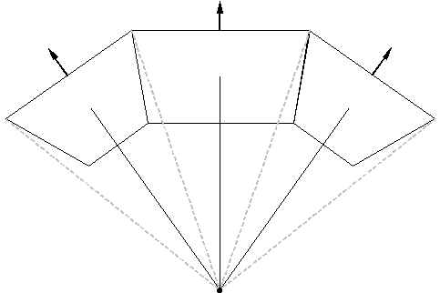

CIGI Host Emulator 3
|
CIGI Host Emulator 3 |
The figure below shows three views forming a panoramic scene. Certain situations may require the views to be moved spatially or hierarchically with respect to the entity. These changes may be applied to each of the three views individually. Alternatively, the views may be grouped so that operations can be performed upon them simultaneously.

Example of a View Group
The latter technique has several advantages. Perhaps most importantly, it reduces the network load because a single View Control packet can be used instead of several. Another advantage is that it guarantees that the spatial relationships between views are maintained. In addition, the Host does not have to keep track of multiple coordinate systems for the views.
A view can be assigned to a view group by setting the Group ID parameter of the View Definition packet. Once the group assignment has been made, the view may be controlled with the View Control packet either individually or as part of the group. Refer to the indicated sections for more information on these packets.
|
© 2008 The Boeing Company |
rev 3.3.0 |